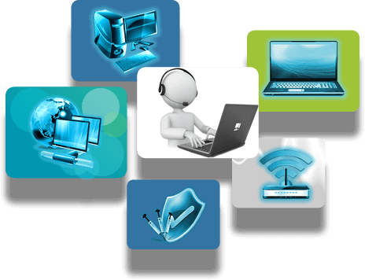

Quem somos?
Seja bem-vindo a Codewave, sua parceira confiável para todas as necessidades de
manutenção de computadores e outros serviços.
Na Codewave, nossa missão é descomplicar o mundo da tecnologia. Somos uma empresa
que se orgulha de fornecer suporte técnico de alta qualidade para atender a todas as
suas necessidades de informática. Nosso propósito é tornar a tecnologia acessível e sem
estresse para todos, desde indivíduos comuns até empresas em crescimento.
Nossos serviços abrangem desde diagnósticos de problemas, soluções de hardware, até
assistência em software e segurança digital. Com uma equipe de técnicos altamente
qualificados e apaixonados pela tecnologia, estamos prontos para ajudar a resolver seus
desafios de informática de maneira eficiente e eficaz.
Estamos aqui para simplificar sua vida digital e garantir que você aproveite ao máximo
esse mundo.
|
 |
Por que escolher a Codewave?
Na Codewave, nossa equipe é composta por profissionais altamente experientes e
especializados em suporte técnico em informática. Com anos de experiência, estamos
preparados para lidar com uma ampla gama de desafios tecnológicos.
Oferecemos uma ampla gama de serviços de suporte técnico em informática, desde resolução
de problemas de hardware e software até consultoria tecnológica e manutenção preventiva.
Seja qual for o desafio, a Codewave tem a solução.
|
| Copyright © 2023 Codewave |
| Contato: suporte@codewave.com.br |
| Telefone: (123) 456-7890 |